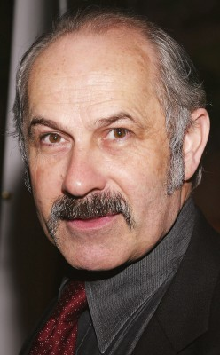
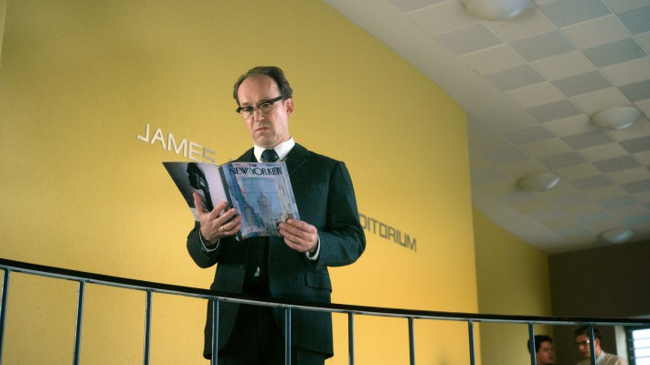

#7554 Hannah Arendt

 IMDB-Wertung: 7.1 / 10
IMDB-Wertung: 7.1 / 10  Metascore: 0
Metascore: 0 
1961 nimmt Hannah Arendt im Auftrag ihrer Zeitung am Eichmann-Prozess in Jerusalem teil. Die anerkannte Philosophin und Schriftstellerin will anhand des Prozesses den Charakter des verantwortlichen Nazis verstehen. Zu diesem Zweck protokolliert sie akribisch das Verfahren, wodurch ihr berühmtestes und zugleich umstrittenes Werk „Eichmann in Jerusalem – Ein Bericht von der Banalität des Bösen“ entsteht. Allerdings stößt es bei vielen aufgrund ihrer Darstellung des Angeklagten auf ein zwiespältiges Echo. Arendt sieht in Eichmann nicht das große Monster, für das ihn die Menschen halten. Vielmehr sieht sie in ihm einfach nur einen Täter, der seine Befehle bestmöglich ausführen wollte. Ihre Sicht und Erkenntnis hat für die Frau weitreichende Konsequenzen – Freunde lösen sich von ihr und im Alltag erfährt sie Ächtung und Ausgrenzung. Jedoch bleibt sie standhaft, denn sie will verstehen, auch wenn dies heißt, die Gedanken dahin zu führen, wo sie wehtun.
Jahr: 2012
Dauer: 113 Minuten
FSK: 6
Land: Deutschland Studio: NFP Marketing & DistributionTonspuren: DTS - ,
Untertitel: Deutsch,
Auflösung: 1080p (1920x808) Größe: 9185 MB
Genre: Drama, Biographie
Regisseur: Margarethe von Trotta
Drehbuch: Pamela Katz
Soundtrack:
Darsteller:
 Barbara Sukowa als Hannah Arendt
Barbara Sukowa als Hannah Arendt Janet McTeer als Mary McCarthy
Janet McTeer als Mary McCarthy Julia Jentsch als Lotte Köhler
Julia Jentsch als Lotte Köhler Axel Milberg als Heinrich Blücher
Axel Milberg als Heinrich Blücher Megan Gay als Francis Wells
Megan Gay als Francis Wells-  Nicholas Woodeson als William Shawn
- Tom Leick als Jonathan Schell
-  Ulrich Noethen als Hans Jonas
 Harvey Friedman als Thomas Miller
Harvey Friedman als Thomas Miller- Shoshana Shani-Lavie als Jenny Blumenfeld
- Jeremy Mockridge als Student Jerry
- Felix Moeller als Hotel Receptionist
- Claire Johnston als Mrs. Serkin
- Alexander Tschernek als Professor
- Hans-Günter Brünker als Journalist
- Jean-Luc Julien als Irving Howe
- Timothy Lone als News Speaker
- Nilton Martins als Student Enrico
- Leila Schaus als Student Laureen
- Victoria Trauttmansdorff als Charlotte Beradt
- Sascha Ley als Lore Jonas
- Friederike Becht als Young Hannah Arendt
- Fridolin Meinl als Young Hans Jonas
- Michael Degen als Kurt Blumenfeld
- Eliana Schejter als Rahel Blumenfeld
- Pini Tavger als Rafael Blumenfeld
- Patrick Hastert als Franz Bruckner
- Gad Kaynar als Jeckes
- Clyde Prescod als Freddy
- Klaus Pohl als Martin Heidegger
- Pitt Simon als Student Peter
- Marie Jung als Elisabeth
- Joel Kirby als Lionel Abel
- Matthias Bundschuh als Norman
- Ralph Morgenstern als Moderator
- Germain Wagner als Siegfried Moses
- Gilbert Johnston als Professor Kahn
- Adolf Eichmann als Himself , archive footage, uncredited
- Gideon Hausner als Himself , archive footage, uncredited
- Penina Mezei als Bride , uncredited
Datei: X:\2012(G-M)\Hannah Arendt (2012, FSK6, 1920x808).mkv seit 20.11.2017
Festplatte: HD 2012(A-M)
 Es gibt insgesamt 112 Filme in der Gruppe '2012(G-M)'
Es gibt insgesamt 112 Filme in der Gruppe '2012(G-M)'